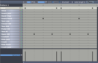

Hydrogen
Dieser Artikel wurde für die folgenden Ubuntu-Versionen getestet:
Ubuntu 14.04 Trusty Tahr
Zum Verständnis dieses Artikels sind folgende Seiten hilfreich:
Hydrogen ist ein Schlagzeugprogramm für GNU/Linux. Das Hauptziel dieses Projekts ist professionelle, aber einfach und intuitiv zu bedienende, Pattern-basierte Schlagzeugprogrammierung.
Bei "Patterns" handelt es sich um mehr oder weniger kleine Schlagzeugfiguren, die man in einem ersten Schritt programmiert, um sie dann wie einzelne Bausteine zu kompletten Arrangements zusammenzusetzen. Beispielsweise erklingt also während der ersten 32 Takte eines Stücks die erste Figur, dann folgen 64 Takte mit der zweiten etc. Alternativ lassen sich natürlich auch sehr komplizierte Arrangements mit einer Vielzahl von Figuren anlegen, die in kurzer Zeit aufeinander folgen.
Die Figuren selbst lassen sich nach vielen unterschiedlichen rhythmischen Mustern anlegen. Man kann auf ein ganzes Arsenal unterschiedlicher Klänge von Schlagzeugen und Perkussionsinstrumenten zurückgreifen.
Hydrogen unterstützt LADSPA-Plugins, mit denen z.B. zusätzliche Effekte eingebaut werden können.
Installation¶
Das Programm kann über die Paketverwaltung installiert werden [1]:
hydrogen (universe)
 mit apturl
mit apturl
Paketliste zum Kopieren:
sudo apt-get install hydrogen
sudo aptitude install hydrogen
Mitgeliefert werden das GM-Kit und eine Emulation der klassischen Hardware-Rhythmusmaschine ROLAND TR808. Zusätzliche Drumkits können über folgendes Paket installiert werden:
hydrogen-drumkits (universe)
mit apturl
Paketliste zum Kopieren:
sudo apt-get install hydrogen-drumkits
sudo aptitude install hydrogen-drumkits
Weitere Drumkits können von Sourceforge  bezogen werden.
bezogen werden.
Einrichtung¶
Hydrogen bietet in den Menüs zahlreiche Justagemöglichkeiten; dieser Abschnitt greift nur die wichtigsten heraus. Am Wichtigsten ist das Fenster, das man über "Werkzeuge -> Einstellungen" oder Strg + P erreichen kann.
Audiotreiber¶
| Einstellungsfenster für die Audioanbindung |
Wie andere anspruchsvollere Audioprogramme unter Linux kann auch Hydrogen auf verschiedene Art ins Audiosystem eingebunden werden. In der Standardeinstellung sucht sich das Programm die Verbindung selbstständig aus. Diese Auswahl kann aber auch manuell vorgenommen werden. Einstellen kann man dies auf der Registerkarte "Audiosystem".
Am einfachsten und für den Amateurbereich oder separate Nutzung von Hydrogen ausreichend ist die Anbindung über OSS oder ALSA. In den meisten Fällen schließt sich das Programm ohne weitere Schritte direkt an den Ausgangsteil der Soundkarte an, sodass man direkt etwas hört.
Alternativ kann man Hydrogen auch über JACK einbinden. Die Entwickler von Hydrogen empfehlen diese Lösung. Dazu muss der JACK-Server gestartet werden, bevor Hydrogen gestartet wird: Man öffnet also beispielsweise QJackCtl und drückt dort das Feld "Start".
Zusätzlich bietet die Registerkarte "Audiosystem" auch noch die Möglichkeit, etwa die Lautstärke des hydrogen-internen Metronoms zu justieren - oder zu bestimmen, dass das Audio-Ausgangssignal von Hydrogen schon vor den Pegelreglern des programmeigenen Mischpults abgegriffen wird - wodurch es von letzteren unbeeinflusst bleibt.
Hydrogen und MIDI¶
| Einstellungsfenster für MIDI-Anbindungen |
Wie bei Hard- und Software-Rhythmuscomputern dieser Art üblich, kann Hydrogen auch in ein MIDI-System eingebunden werden. Das lässt sich dann beispielsweise nutzen, um Schlagzeugsequenzen über ein externes Gerät in Echtzeit einzuspielen. Hydrogen kann aber auch umgekehrt einen externen Klangerzeuger mit MIDI-Impulsen steuern. Eine Rolle spielt MIDI schließlich auch noch, wenn man Hydrogen mit anderen Tonstudioprogrammen wie dem Sequenzer Rosegarden oder Qtractor zusammenarbeiten lassen möchte.
Ähnlich wie im Audiobereich hat man auch hier wieder die Wahl zwischen einer MIDI-Anbindung über ALSA oder JACK. In den meisten Fällen dürfte sich letztere empfehlen. Details zu JACK und MIDI finden sich im Artikel MIDI.
Das grundsätzliche Bedienungskonzept¶
Das Programm kann als hydrogen gestartet werden [2]. Hydrogen ist sehr einfach und intuitiv zu bedienen.
Die Bedienoberfläche setzt sich aus mehreren Fenstern zusammen. Wer als Nutzer z.B. mit einer professionellen Tonstudio-Audiobearbeitung wie Ardour vertraut ist, wird Parallelen bemerken:
Alle Arbeiten an Patterns und kompletten Musikstücken erledigt man im Arrangementfenster von Hydrogen. Ein Arrangement wird nach Druck auf den Wiedergabeknopf abgespielt; man kann es aber auch in Form einer Audio- oder MIDI-Datei exportieren etc.
Die akustischen Verhältnisse zwischen den einzelnen Schlaginstrumenten regelt man hauptsächlich im Mischpult-Fenster (Mixer) von Hydrogen. Ähnlich einem analogen Mischpult kann man hier für jedes Instrument die Lautstärke und die Lage im Stereopanorama bestimmen. Zusätzlich lassen sich auch noch Effekte wie Hall oder Echo eingliedern.
Zusätzlich gibt es ein optionales Fenster "Dirigent", in dem Zählzeiten und Taktzahlen besonders groß angezeigt werden.
Das Arrangementfenster¶
| Bedienoberfläche von Hydrogen |
Dessen unterer Teil (auch Patterneditor genannt) dient der Gestaltung der Patterns. Der obere Teil (der Songeditor) ist einer Sammlung von Tonspuren vergleichbar, auf denen man die einzelnen Patterns anordnet und daraus das Arrangement eines Stückes herstellt.
Grundeinstellungen¶
Unterhalb der Menüleiste befinden sich die Grundeinstellungen. Links befindet sich die Anzeige für die Zeit und rechts daneben liegen die Steuerelemente für den Player. Über die Schaltfläche "Mode" kann zwischen Patternplay (nur das ausgewählte Pattern wird gespielt) und Songplay (der ganze Song wird gespielt) gewechselt werden. Rechts daneben kann die Geschwindigkeit des Songs/Patterns in Schlägen pro Minute (BPM) eingestellt werden. Ganz rechts befinden sich noch die Schaltflächen für "Mixer" und "Instrumenten-Rack".
Songeditor¶
In der oberen Hälfte des Fensters befindet sich der Songeditor. Hier können die Patterns für den jeweiligen Abschnitt des Liedes aktiviert werden. Standardmäßig werden 10 Patterns angezeigt. Es können aber problemlos weitere hinzugefügt werden.
Patterneditor¶
Im unteren Teil werden die einzelnen Patterns definiert. Man erstellt also aus den vorgegebenen Instrumenten ein Pattern, um es anschließend im Songeditor zu aktivieren.
Legt man ein Projekt neu an, landet man im Patterneditor standardmäßig auf dem "Pattern 1". Dazu passend ist das entsprechende Feld im Songeditor hellgrau gefärbt. Möchte man stattdessen zunächst ein anderes Pattern programmieren, klickt man es oben in der Liste im Songeditor entsprechend an. Dann kann man sich dem Patterneditor und dessen Bedienelementen zuwenden. Bevor man mit der Programmierung beginnt, sollte man kontrollieren, dass der Hydrogen-Abspielmodus auf "Pattern" geschaltet ist.
"Size" dient zunächst dazu, die Länge des Pattern festzulegen. Dabei ist man relativ frei und kann sich an den musikalischen Erfordernissen orientieren - ob die Figur nur einen Vierteltakt oder 16 Takte dauern soll.
|  |
| Pattern-Editor in Einstellung Piano |
"Resolution" beschreibt die Auflösung des Pattern. Hier passt man die Figur an die rhythmische Charakteristik eines Stücks an. Die wählbaren Zahlen beziehen sich auf die Unterteilung der einzelnen Zählzeit. Die häufigsten Einstellungen sind beispielsweise "8" für einen Achtelrhythmus (bekanntestes Beispiel: typischer Rock), "16" für einen Sechzehntelrhythmus (bekanntestes Beispiel: Funk), oder "8T" für Achtriolen-Unterteilung (wie beispielsweise im Shuffle oder im Swing). Relevant wird diese Einstellung besonders, wenn man z.B. über ein per MIDI verbundenes Eingabegerät eine Figur in Echtzeit einspielt und die einzelnen Schläge exakt im Rhythmusmuster platziert wissen will. Dann korrigiert Hydrogen mit einer Quantisierung kleine rhythmische Unsauberkeiten. Da dies unter Umständen recht "maschinell" klingen kann, gibt es auch die Möglichkeit, die Quantisierung abzuschalten. Das geschieht entweder ebenfalls in diesem Menü oder mit einem Mausklick  auf das Feld "Quant" in der Kopfzeile des Patterneditors.
auf das Feld "Quant" in der Kopfzeile des Patterneditors.
Das neben letzterem liegende Feld "Hear" ist standardmäßig aktiviert. Es dient dazu, dass man bereits während der Eingabe den Klang der Instrumente hören kann.
Standardmäßig ist der Patterneditor auf "Piano" geschaltet. Der Name rührt daher, dass man wahlweise auch auf einer per MIDI angeschlossenen Klaviatur die Rhythmen einspielen kann. Dort läge dann die Kick Drum auf einer Taste, die Toms lägen auf anderen, auch die geschlossene und die offene HiHat auf unterschiedlichen Tasten etc. Diese Einstellung bietet sich besonders an, wenn man - ob per externer Klaviatur oder per Maus - zu schnellen Ergebnissen kommen möchte.
| Pattern-Editor in Einstellung Drum |
Alternativ lässt sich der Patterneditor auch auf "Drum" schalten. Dann verwandelt sich die zuvor auf das gesamte Drumset bezogene Matrix in eine feiner unterteilte, die sich nur auf ein einzelnes Schlaginstrument bezieht. Dort kann man neben dem Anschlagszeitpunkt auch die Tonhöhe feinabstimmen. Das bietet sich natürlich besonders dann an, wenn man auf Klangtüftelei aus ist. Auch Trommel-"Werksklänge", die man etwa über die Paketquellen geladen hat, lassen sich also in Teilen individuell verändern.
Auf der linken Seite findet sich eine standardmäßige Zusammenstellung von Schlaginstrumenten, "auf" denen man das eigene Pattern spielen kann. Je nach Konfiguration von Hydrogen ist das ein Drumset mit mehreren Snare-Drums, Ride- und Crash-Becken, einem Satz Toms und Zusatzklängen wie Cowbell oder Rimshot. Wichtig sind auch verschiedene Spielweisen der HiHat: offen, geschlossen und "Pedal", also Bedienung der HiHat mit dem Fuß. Klickt man auf das graue Feld des Instrumentes, kann man sich den Klang anhören. Vermisst man hier bestimmte Instrumente, auf die man aus ist, kann man sie, wie unten erläutert, über die "Klangbibliothek" hinzufügen.
An allen Punkten im rhythmischen Raster, wo man ein bestimmtes Instrument anschlagen möchte, setzt man dann mit einem Mausklick einen schwarzen Punkt. Nochmaliges Anklicken lässt den Punkt wieder verschwinden.
Um die Eingabe zu erleichtern, lassen sich mit  auf dem Instrumentenfeld einige Befehle aufrufen: "Noten löschen" löscht sämtliche Schläge des Instrumentes aus dem Pattern. Mit "Fill Notes" dagegen kann man mit einem Klick ein wiederkehrendes Muster festlegen. "Fill all notes" setzt beispielsweise auf jeder einzelnen Unterteilung einer Taktzeit einen Schlag - möchte man z.B. auf einem Sechzehntel-Funk-Rhythmus eine geschlossene HiHat in Sechzehnteln spielen, geht das so am schnellsten; "Fill 1/4 notes" setzt nur auf jeder vierten Unterteilung einen Schlag. Im Falle des Sechzehntel-Funk-Rhythmus wäre das also nur jede volle Zählzeit.
auf dem Instrumentenfeld einige Befehle aufrufen: "Noten löschen" löscht sämtliche Schläge des Instrumentes aus dem Pattern. Mit "Fill Notes" dagegen kann man mit einem Klick ein wiederkehrendes Muster festlegen. "Fill all notes" setzt beispielsweise auf jeder einzelnen Unterteilung einer Taktzeit einen Schlag - möchte man z.B. auf einem Sechzehntel-Funk-Rhythmus eine geschlossene HiHat in Sechzehnteln spielen, geht das so am schnellsten; "Fill 1/4 notes" setzt nur auf jeder vierten Unterteilung einen Schlag. Im Falle des Sechzehntel-Funk-Rhythmus wäre das also nur jede volle Zählzeit.
Unterhalb der Matrix für den Anschlag der Instrumente finden sich noch Einstellmöglichkeiten für den Klang. Unter "Velocity" kann man für jeden einzelnen Schlag jedes Instrumentes die Lautstärke ändern; "Pan" vollzieht dasselbe für die Lage im Stereopanorama. "Lead and lag" bietet die Möglichkeit, in die Mikro-Time einzusteigen und einen Schlag etwas vor oder hinter dem Beat zu platzieren. "Note" ermöglicht es, die Tonhöhe eines virtuellen Trommelfells von einem Schlag zum anderen zu ändern. Es bietet ähnliche, allerdings weniger fein unterteilte Möglichkeiten wie der oben erläuterte Eingabemodus "Drum". In dieser Sektion von Hydrogen lassen sich also Wirkungen erzielen, die vom Auffrischen des Schlagzeugklangs im Interesse der Lebendigkeit bis hin zu gewollt absurden Effekten reichen.
Instrumenten-Rack¶
Hinter diesem Namen verbirgt sich das Klangarsenal von Hydrogen. Dort kann man zum einen einzelne Instrumente bearbeiten, zum anderen kann man zusätzliche Instrumente hinzuziehen.
Klangformung am einzelnen Instrument¶
Unter "Instrument" kann man die einzelnen Schlaginstrumente genauer definieren. Das bezieht sich z.B. auf klangliche Details und die Lautstärke, aber auch auf MIDI-Anbindungen o.ä.
Zu diesem Zweck stellt Hydrogen in der Standardstellung "Übersicht" eine Sammlung von Bedienungselementen zur Verfügung, die sich an den Klangparametern analoger Synthesizer orientieren. Die vier Potentiometer "Attack", "Decay", "Sustain" und "Release" dienen dazu, das Ein- und Ausschwingverhalten eines Klangs festzulegen, also die Hüllkurve. Verlängert man also bei einer geschlossenen HiHat die Einschwingzeit "Attack", bekommt man einen reichlich verhangenen Klang. "Cutoff" und "Resonance" sind die Parameter eines synthesizertypischen Tiefpass-Filters. Mit "Cutoff" kann man den Obertonanteil begrenzen, was im Falle der geschlossenen HiHat sofort deutlich hörbare Resultate bringt. "Resonance" bedeutet, dass die Obertöne um die Cutoff-Frequenz des Filters herum in der Lautstärke angehoben werden. Damit lassen sich dann bereits deutlich synthetische Klänge erzeugen. Zusätzlich enthält das Instrumentenrack u.a. einen separaten Lautstärkeregler, einen Zufallsgenerator für die Tonhöhe und Justagemöglichkeiten für die MIDI-Anbindung eines externen Keyboards, eines MIDI-Schlagzeugs etc.
| Einfache Parameter der Klangformung für einzelne Instrumente |
| Konfigurationsfenster für Klangelemente |
| Einstellungsfenster für einzelne Klangelemente |
Schaltet man auf "Layer", so begibt man sich in die eigentliche "Anatomie" des Klangs: der setzt sich standardmäßig häufig nur aus einem einzelnen Element ("Layer") zusammen - im nebenstehenden Bild wird das durch den langen blauen Balken in der ersten Zeile des Layer-Feldes symbolisiert. Es können aber auch mehrere Elemente übereinander oder aneinander gelegt werden. Zusätzliche Elemente lädt man dabei über das Feld "Load Layer", über "Delete Layer" kann man sie entfernen.
Das hängt damit zusammen, dass Hydrogen zwar als Rhythmusmaschine konzipiert ist. Es kann aber Steuerungsimpulse statt auf Schlaginstrumente auch auf völlig andere Klänge richten, die anstatt der Schlaginstrumente aufgerufen werden.
Über "Edit Layer" gelangt man wieder eine Ebene tiefer: in die Bearbeitung der einzelnen Elemente. Es öffnet sich ein Fenster "Sample Editor", in der man eine ganze Reihe Klangparameter verändern kann. Je nach zugrundeliegendem Klang lassen sich dabei sehr vielfältige Effekte erzeugen.
Hinweis:
Hydrogen kann unterschiedliche Audiodateien als Layer verarbeiten - bekanntestes Beispiel dürfte das WAVE-Format sein. Wenn man in den Klang des Layer eingreift, wird die zugrundeliegende Audiodatei allerdings nicht verändert. Hydrogen arbeitet also "non-destruktiv" und speichert die Klangmodifikationen in einer eigenen Datei ab.
Das Layer-Fenster bietet außerdem noch einmal eine Lautstärkeregelung des Schlaginstrumentes, daneben noch eine grobe und eine feine Regelmöglichkeit für die Tonhöhe.
| Hydrogen-Klangbibliothek |
Hinzufügen weiterer Instrumente¶
Über den Punkt "Klangbibliothek" kann man weitere Schlaginstrumente einfügen. Das umfasst alternative Drumkits, Schlaginstrument-Imitationen bestimmter Synthesizer wie des Roland Juno-6, die Imitation klassischer Rhythmuscomputer wie des Roland TR-808, aber auch Perkussionsinstrumente aus dem Bereich der Weltmusik.
Möchte man ein Instrument in die Klängesammlung des aktuellen Songs übernehmen, zieht man es mit der Maus hinüber ganz nach links in die Liste der Instrumente.
Der Songeditor¶
Bereits ein einzelnes Pattern kann man nutzen, um z.B. eine durchgehend einheitliche Schlagzeugspur einzuspielen oder um Hydrogen wie ein komfortables Metronom beim Üben einzusetzen. Damit erfasst man aber nur einen kleinen Teil der Möglichkeiten dieser Software. Deutlich spannender und vielfältiger wird es, wenn man daran geht, aus den Patterns ganze Songs zu bauen. Das geschieht im Arrangementfenster im Songeditor. Dessen Bedienung erklärt sich über weite Strecken selbst, deshalb hier nur einige Hinweise.
Für jedes Pattern wird eine eigene Spur angelegt - die man auf Wunsch mit einem Rechtsklick auf den Namen und über das darauffolgende Menü "Eigenschaften" individuell benennen kann. Falls die standardmäßig vorhandenen Spuren nicht ausreichen, kann man weitere hinzufügen.
Oberhalb der Spuren findet sich die Nummerierung der einzelnen Takte. Für jeden Takt, in dem ein bestimmtes Pattern erklingen soll, markiert man mit einem Mausklick das blaugraue Kästchen in der betreffenden Zeile. Das verfärbt sich dadurch leuchtend hellblau.
Damit man bei einem langen Stück nicht eine endlose Reihe von Kästchen anklicken muss, bietet Hydrogen die Funktion, den Song von einer bestimmten Taktnummer bis zu einer anderen mit einem Pattern zu füllen. Dazu geht man wieder über einen Rechtsklick auf den Pattern-Namen zum Menü "Füllen/Löschen". Im folgenden Fenster trägt man die gewünschten Taktzahlen ein.
Mit einem Mausklick auf das Feld "BPM" (Beats per minute) oberhalb der Pattern-Namen kann man eine zusätzliche Skala für das Tempo einblenden. Die kann dazu dienen, Tempoänderungen an bestimmten Punkten des Stücks zu programmieren. Dazu klickt man an der gewünschten Stelle auf die Skala und trägt im folgenden kleinen Fenster Tempo und Taktzahl ein. Im selben Fenster kann man die Programmierung auch wieder löschen.
Möchte man, dass mehrere gleichzeitig ablaufende Patterns an vielen Stellen im Stück wiederholt werden, kann man diese Patterns zu einer Gruppe zusammenfassen und daraus ein einzelnes virtuelles Pattern bilden. Dazu öffnet man mit einem Rechtsklick auf den Namen eines noch nicht anderweitig vergebenen Pattern und über den Menüpunkt "Virtual Pattern" das Fenster "Select Virtual Pattern". Dort markiert man mit
Strg + alle Patterns, die zu der Gruppe gehören sollen.
Mixer¶
| Hydrogen-Mixer |
Im Mixer-Fenster können die einzelnen Instrumente fein abgestimmt werden. Einige Funktionen gleichen den Lautstärke- und Panoramaeinstellungen, die sich bereits im Patterneditor gefunden haben. Daneben können z.B. einzelne Instrumente als Solo markiert werden - wenn man sie z.B. probehalber isoliert abhören möchte. Außerdem kann man hier auch die LADSPA-Effekte einstellen.
Der Mixer selbst setzt sich nach dem Prinzip eines Analogmischpultes aus den links liegenden einzelnen Kanalzügen zusammen - für jedes Instrument steht einer zur Verfügung. Darauf folgt eine Sektion zum Einbinden der Effekte und schließlich ganz rechts die Regler für die Sammelschiene (Master) aller Instrumente. Hier finden sich auch Regler, mit denen man das Gesamtergebnis "abrunden" kann.
Kanalzüge¶
Wie von Analogmischpulten her gewohnt, läuft das Signal - also der Klang des Schlaginstrumentes - von oben nach unten den Kanalzug. Das beginnt mit den drei kleinen grauen Feldern: Mit einem Klick auf den kleinen Abspiel-Pfeil kann man sich den Klang des Instrumentes separat anhören. Die rechts danebenliegende blaue Lampe leuchtet auf, sobald das Instrument in Aktion tritt. Ein Klick auf das Feld "M" (für "Mute") schaltet das Instrument stumm. Ein Klick auf das Feld "S" (für "Solo") schaltet alle anderen Instrumente stumm. Der darunterliegende Drehregler dient dazu, das Instrument im Stereopanorama anzuordnen.
Mit den vier kleinen Drehreglern darunter lassen sich individuell Effekte zumischen, die man in der Effektsektion des Mischpults eingebunden hat.
Darunter schließlich findet sich der Lautstärkeregler für das Instrument. Die zugehörige blaue Pegelanzeige gibt beim Abspielen Auskunft darüber, wie weit man von der Vollaussteuerung (1.00) entfernt ist: Ist diese Schwelle überschritten, nimmt die Anzeige zur Warnung eine rote Farbe an.
Effektsektion und LADSPA-Plugins¶
| Auswahlfenster für LADSPA-Effekte |
Hydrogen stellt vier Effektlinien zur Verfügung. Zu jeder gehören ein runder Mischregler für die Lautstärkeintensität "Return" und ein rosafarbener "BYP"-Taster für den Bypass. Den eigentlichen Effekt wählt man über das Feld "Edit".
Es öffnet sich ein Fenster "Eigenschaften des LADSPA-Effekts" mit der zugehörigen Nummer. Standardmäßig ist das Fenster zunächst leer; man muss es also über einen Mausklick auf "Effekt wählen" bestücken. Daraufhin öffnet sich das Fenster "LADSPA-Effekt wählen", in dem man z.B. aus einer alphabetischen Liste mehrerer Dutzend Effekte auswählen kann.
Hat man das getan, erscheinen die Parameter des Effekts im Fenster "Eigenschaften des LADSPA Effekts" und können dort justiert werden. Pro Effektlinie kann man nur einen Effekt einsetzen - sucht man also über "Effekt wählen" einen anderen Effekt aus, verschwindet der erste aus dem Fenster. Über "Remove FX" kann man ihn ersatzlos verschwinden lassen.
Der Name des ausgesuchten Effekt-Plugins wird im blauen Feld in der Effektsektion des Mischpults angezeigt. Wie oben erwähnt, bindet man ihn dann über die zugehörigen kleinen Drehregler in den Kanalzügen in den Klang der Instrumente ein.
| Einstellungsfenster für LADSPA-Effekte, hier für einen Gate-Hall |
Master (Sammelschiene)¶
Nachdem die Signale der Instrumente die Kanalzüge durchlaufen haben, landen sie hier auf der Sammelschiene.
Dort finden sich neben dem großen Master-Lautstärkeregler zunächst zwei blaue Schaltfelder: Mit "FX" kann man die Effektsektion optisch aus- und einblenden. "Peak" schaltet die Aussteuerungsanzeige im Master-Lautstärkeregler ein und aus.
Schließlich enthält die Master-Sektion drei Drehregler unter dem Stichwort "Humanize". Hier geht es darum, den für viele Ohren zu maschinell-exakten Rhythmus etwas weniger streng-exakt zu gestalten. "Velocity" sorgt für kleine Schwankungen in der Lautstärke; "Timing" für ebensolche in der rhythmischen Akkuratesse - setzt man diesen Effekt zu stark ein, wird der Rhythmus leicht wacklig. "Swing" wiederum hat nichts mit musikalischen Unsauberkeiten zu tun, sondern regelt, in welchem Maße man dem Rhythmus stufenlos einen triolischen Anteil einhauchen möchte. Neben Swing-Rhythmen ist das auch bei Shuffle-Rhythmen brauchbar.
Audioausgang und Dateiexport¶
 |
| Mehrspurige Audioverbindung Hydrogen-Ardour in Patchage |
Was man in Hydrogen programmiert, kann man auf unterschiedliche Weise weiterverarbeiten. Die gängigste Form ist das reine Audiosignal in Echtzeit. Daneben kann man aber auch MIDI-Daten exportieren. Möglich ist auch der Export eines kompletten Songs als Audiodatei.
Audioanbindung¶
Wie oben geschildert, kann man Hydrogen auf unterschiedliche Weise ins Audiosystem des Rechners einbinden. Hydrogen selbst bietet noch eine Sonderfunktion: Standardmäßig gibt es den Klang des gesamten Schlagzeug-Arsenals zweikanalig in Stereo aus; man kann aber auch festlegen, dass jedes einzelne Instrument zusätzlich über einen separaten Ausgang ausgegeben wird. Dazu begibt man sich über "Werkzeuge -> Einstellungen" in das oben erwähnte Fenster, wechselt auf die Karte "Audiosystem" und setzt dort einen Haken bei "create per-instrument outputs". Sinnvoll kann das sein, wenn man Hydrogen mit einer DAW wie Ardour verbinden möchte. Dann landet jede Trommel und jedes Becken auf einer separaten Spur, die man anschließend separat bearbeiten kann.
Audiodatei-Export¶
Konventionell ist der Export des kompletten Songs. Über "Projekt -> Song exportieren" gelangt man in ein Fenster, in dem man die gewünschten Dateiformate, Abtastfrequenzen etc. einstellen kann. Auch lässt sich wählen, ob alles in eine Datei exportiert oder für jedes Schlaginstrument eine separate Datei angelegt werden soll.
| Audio-Exportfenster |
Pattern-Export¶
Möchte man ein bestimmtes Pattern auch in anderen Hydrogen-Projekten verwenden, kann man es über "Projekt -> Exportiere Pattern als ..." exportieren. Es entsteht eine Datei, die man dann in ein anderes Projekt über "Projekt -> Öffne Pattern" importieren kann.
MIDI-Dateiexport¶
Der gesamte Inhalt eines Songs kann auch als MIDI-Datei exportiert werden. Das funktioniert über den Menüpunkt "Projekt -> Mididatei exportieren". Das Resultat ist eine Datei, die z.B. in Sequenzern wie Rosegarden weiterverarbeitet werden kann.
Problembehebung¶
JACK verhindert die Justage des Tempos¶
| Wahlmöglichkeit für die Anbindung an die JACK-Transportfunktion |
Dieser Fehler kann auftreten, wenn Hydrogen über JACK betrieben wird und gleichzeitig ein Programm wie Ardour geöffnet ist (wenn man z.B. vorhat, einen Song aus Hydrogen in Echtzeit in Ardour aufzunehmen). Der Fehler kann sich dahingehend bemerkbar machen, dass die Tempoanzeige von Hydrogen fest auf einer bestimmten Zahl (z.B. 120 Schläge pro Minute) stehen bleibt und sich auch nicht mehr verändern lässt.
Die Lösung des Problems ist abhängig von der Hydrogen-Version:
In älteren Versionen sollte es helfen, mit einem Klick auf das Feld "J. TRANS" rechts neben der Tempoanzeige die Anbindung an den JACK-Transport auszuschalten. Danach lässt sich das Tempo in Hydrogen wieder frei wählen.
Mindestens ab der Hydrogen-Version 0.9.6.1 und neuer ist das Feld "J. TRANS" nicht mehr vorhanden. In diesem Fall wechselt man ins Ardour-Menü "Projekt > Projekteinstellungen > Timecode" und entfernt dort den Haken vor "Ardour ist Jack Time Master". Dann lässt sich das Tempo in Hydrogen wieder frei wählen.
 Sammelartikel über Elemente eines Open-Source-Tonstudios, auch Übersicht über weitere Synthesizer und Sequencer
Sammelartikel über Elemente eines Open-Source-Tonstudios, auch Übersicht über weitere Synthesizer und Sequencer

- Erstellt mit Inyoka
-
 2004 – 2017 ubuntuusers.de • Einige Rechte vorbehalten
2004 – 2017 ubuntuusers.de • Einige Rechte vorbehalten
Lizenz • Kontakt • Datenschutz • Impressum • Serverstatus -
Serverhousing gespendet von